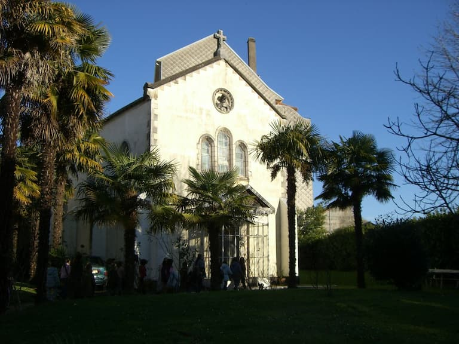
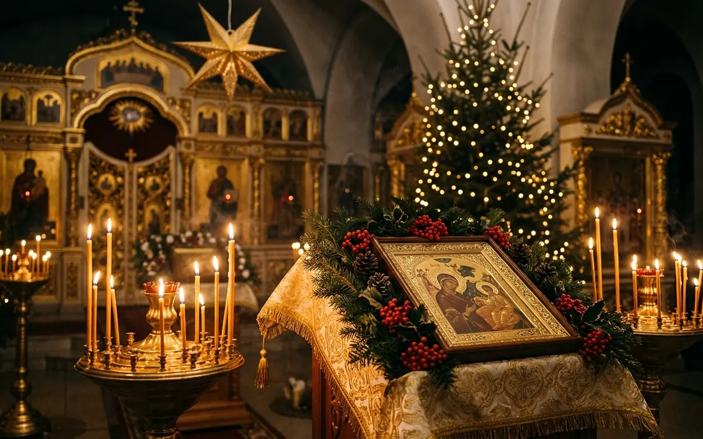
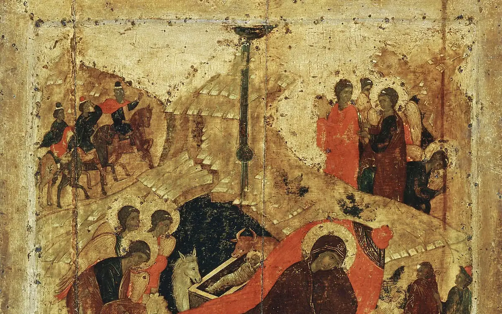
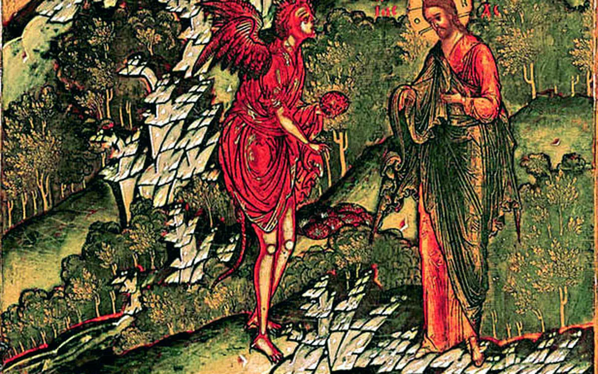
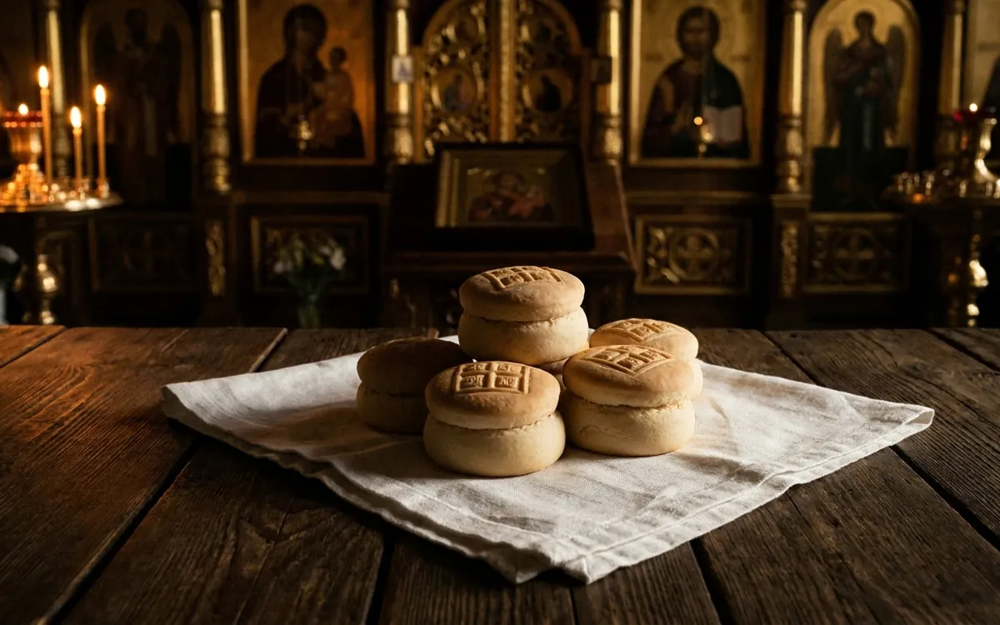

Baptême
Préparation au baptême des enfants et des adultes, selon le rite byzantin.
Tout savoir sur le baptême →
Venez vivre la beauté de la liturgie orthodoxe dans notre église Saint-Alexandre-Nevsky à Pau. Un lieu de prière, de rencontre et de partage de la foi, la tradition byzantine et l’amitié chrétienne.
Au milieu du XIXᵉ siècle, une importante communauté russe s’installe à Pau, séduite par la réputation curative du climat béarnais. À l’initiative du père Hérodien, aumônier de cette colonie, une souscription de 65 000 francs est levée auprès des aristocrates russes du Béarn : le prince Doundoukoff-Korsakoff, le comte Mouravieff-Amoursky, le général Timacheff, Basile Narychkine, Théodore Rioumine… soit une soixantaine de familles au total. En 1867, l’église Saint‑Alexandre‑Nevsky voit le jour. Elle est aujourd’hui considérée comme la troisième plus ancienne église orthodoxe russe de France, après celles de Nice (1860) et de Paris (1861). Elle est dédiée à saint Alexandre Nevsky, prince de Novgorod et vainqueur de la bataille de la Neva (1240), et témoigne depuis plus de 150 ans des liens profonds entre le Béarn et la Russie.
Commandée depuis Saint‑Pétersbourg, elle est confiée à un architecte local, Lucien Cottet (1842-1919), qui livre un résultat éloigné des églises russes traditionnelles. Discrète, nichée dans un jardin bordé de palmiers, elle ne possède ni dômes traditionnels ni façades ostentatoires. Seule une croix orthodoxe à huit branches surmonte la façade, avec un buste du Christ au-dessus de l’entrée, sculpté par Jean Rolland-Bouttier. Le fronton porte un œil rayonnant inscrit dans un triangle, symbole du divin. À l’intérieur, l’iconostase de 1867, signée par le peintre iconographe Vassili Pecheronoff, provient de Saint‑Pétersbourg et rappelle l’origine de ses fondateurs.
Découvrir saint Alexandre Nevsky, notre saint patron →


Troisième église orthodoxe russe bâtie en France, après Nice et Paris, elle témoigne depuis plus de 150 ans des liens entre le Béarn et la Russie.
Nous rendre visite →La Divine Liturgie est célébrée en slavon, parfois aussi en français, avec le chant a cappella, les icônes et le calendrier julien de l’Église russe.
Comment se passe un office →Notre paroisse rassemble des fidèles de nombreux pays et de toutes origines, unis par la même foi. Après la Liturgie, on se retrouve autour d’un repas pour discuter. Croyants ou simples curieux, vous êtes les bienvenus.
Recevoir les nouvelles de la paroisse →Accompagnement spirituel et sacrements dans la tradition orthodoxe.
Prendre rendez-vous avec le prêtre →Préparation au baptême des enfants et des adultes, selon le rite byzantin.
Tout savoir sur le baptême →Accompagnement des fiancés et célébration du sacrement du mariage.
Tout savoir sur le mariage →Rencontre avec le prêtre pour la confession, l'écoute et la prière.
Comment se confesser ? →Découvrir la foi orthodoxe pas à pas avec le catéchisme en ligne ; le prêtre accompagne ceux qui se préparent au baptême.
Lire le catéchisme en ligne →Bénédiction des maisons et objets, prière pour les malades, funérailles.
Bénédictions, malades et funérailles →Consultez ci-dessous le calendrier des offices et des fêtes liturgiques.
Voir le calendrier →La vie de la paroisse
Les nouvelles de la paroisse : travaux de l’église, fêtes, offices et nouveaux articles.
Nous avons la joie d’annoncer la réouverture de notre église. La première Divine Liturgie sera célébrée le dimanche 6 décembre à 10h30, jour de la fête de saint Alexandre Nevsky, patron de notre église.
Lire la suite →Du 28 novembre au 6 janvier, l’Église nous invite à préparer la fête de la Nativité du Christ, que nous célébrons le 7 janvier, par quarante jours de jeûne, de prière et de partage.
Lire la suite →À l’occasion de la Synaxe de l’archistratège Michel et des puissances célestes, le 21 novembre, découvrez une nouvelle page sur l’archange : le sens de son nom, l’Écriture, le miracle de Chones, ses icônes et une vidéo.
Lire la suite →Dernières lectures
Des grands livres de la tradition, des vies de saints et des articles sur la foi et la prière, présentés simplement pour les découvrir ou les approfondir.
Toutes les lectures spirituelles →
Pourquoi le 7 janvier, la veille de Noël et le sotchivo, l’icône et les chants de la Nativité.
Lire →
Du 28 novembre au 6 janvier : dates, ce que l’on mange, les fêtes du jeûne et le sens de ces quarante jours.
Lire →
Les quatre carêmes, le mercredi et le vendredi, ce que l’on mange, des idées de repas et l’esprit du jeûne.
Lire →
Le chef des armées célestes : son nom, l’Écriture, le miracle de Chones, ses icônes, sa fête du 21 novembre, en vidéo.
Lire →
Le petit pain de l’offrande : son sceau, les cinq prosphores de la Liturgie, la prière pour nos proches.
Lire →
Comment se passe un office orthodoxe et ce qu’il est bon de savoir avant de venir.
Lire →« Dieu a tellement aimé le monde, qu’il a donné son Fils unique, afin que quiconque croit en lui ne périsse point mais ait la vie éternelle. »
Voici les prochains événements de la paroisse. Vous pouvez ajouter les dates à votre agenda.
Première Divine Liturgie à 10h30, en la fête de saint Alexandre Nevsky, patron de notre église. Tous sont les bienvenus ! Inscrivez-vous à la newsletter pour connaître les prochains offices.
Première visite ? Ce qu’il faut savoir →Cliquez sur une date pour voir les fêtes, le jeûne et les offices.
Votre don fait vivre la paroisse : il nous aide à entretenir et à préserver ce lieu de prière, et à financer les travaux de l’église.
Adresse : 18 Rue Jean Réveil, 64000 Pau, France